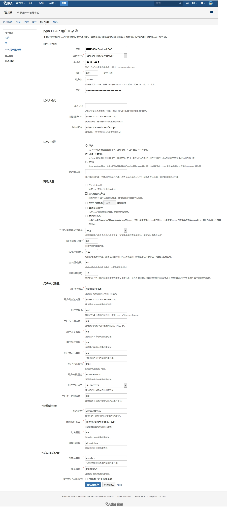

LDAP一些事
从国内的资料文档状况来看，LDAP 这个东西很少有人用。鲜为人知倒不至于，但是很少有人知道是真的，这说明国内的企业很少用这个东西。我们这边由于公司业务的关系，学习了下 LDAP 的内容，顺便也了解了一些用法。
本篇内容不会像普遍的说明文一样解释各种概念如DN、RDN、DIT啥的。本文更倾向于描述概念与理解。旨在新人入门的时候有大概的轮廓不至于一头雾水。当然我还会尝试解释一些东西，这对于之后理解是有帮助的。
历史背景
LDAP出现很久了，大约出现于199几年，诞生的原因就是因为某些巨头公司的电话簿目录管理不明白。当时有一个大而全的目录规范，叫做 DAP ，而LDAP是一种轻量的替代品。再后来可能由于使用比较方便，就（相对）非常流行了。现在，它的使用场景就是公司内部人员（部门）账号的管理。
LDAP 全名是 Lightweight Directory Access Protocol 他是一个协议。就像TCP那些东西一样，他是一堆的标准规范（rfc）。文档上面会说你要想实现这个协议应该提供什么什么功能。但是文档说的再全面，也不会覆盖所有的细节，所以不同的LDAP实现总会有些差异。最常见的一个LDAP实现就是 OpenLDAP，另一个就是AD(active directory) 。好像还有其他的实现，没印象了。
接下来会根据LDAP怎么保存文件，怎么使用文件来讲。整体来说，就像数据库一样，软件与数据库有特定的链接方式，每种数据库实现有不同的结构，但是也有一套一样的东西——SQL
LDAP 存储结构
要使用LDAP的话，第一点就是要理解，他的数据和结构。LDAP把所有数据都搞成了一个 目录树 （DIT），树上面有很多的节点（Entry），每个节点中可以有很多的属性（Attributes）。为了描述节点的位置，或者说为了描述哪个节点。LDAP中有一个概念叫做DN，有了DN就可以在LDAP中，就可以拿到特定的节点了。但是麻烦的是，DN并不是绝对不变的，它是可以配置的，可以修改的。换句话说，DN和id的还不一样。这种可以修改的特性，对LDAP的实现来说是非常不友好的，所以在OpenLDAP这种实现中，为了追踪节点，它还会给每个节点增加一个属性叫做 EntryUUID，就相当于数据的主键了。
上文提到Entry的时候，说到了一个很多属性（Atributes）。其中节点可以相当于一个部门、一个人。属性就可以存放用户的各种信息比方说QQ号、手机号、身份证、姓名等等等。
当然了，每个节点除了属性，还有一个东西叫做 object class（中文不知道是啥），这个东西会描述节点的schema也就是说这个节点中能有什么属性，不能有什么属性，这都是object class说了算的。
上面提到的 object class 、属性 都是有标准文档规范的，而且必须用规范的那么几个。（其他的你也用不了）当然了规范也不是那么死板的，很多东西是选填的，但是有些是必填的。
还有就是LDAP还可以保存用户加密过的密码。这也就是平时企业最常用的事情，把它作为账号服务器，像什么Rancher啊、Jira啊、Confluence啊都可以选择LDAP作为账号认证的方式,就是这样的。
表示人员的 Entry 常用inetOrgPerson 、person 这类object class。当然了，部门也有部门的object class，但我忘了。
LDAP 连接
LDAP 有专门的网络交互协议，是4层的，也就是和HTTP是同一层。具体基于TCP还是UDP不太清楚。换句话说，想要连接到LDAP服务，必须要用专门的工具才行。
UNIX系统可以使用 ldapsearch 进行链接。当然了，也可以考虑装一个 Apache Directory Studio 的图形界面进行操作。代码类库的话就有很多选择了，可以用Unboundid、Spring security也有集成，其他语言也有类似的。
这个协议的核心目的是访问目录的，所以这个协议 有一些操作 Entry 的方法（add delete modify modifyDN） 还有连接到指定LDAP服务器的方法（bind、unbind）当然了还有几种搜索方式。
比方说如果用Jira配置了LDAP，Jira就会链接LDAP服务器查找特定的人，验证账号密码是否正确。
关于查询我需要再说一下，LDAP查询有一种filter方式，可以通过特定的语法筛出想要的东西。当然了语法是什么不重要。
LDAP使用
因为LDAP本身就是比较灵活的目录，所以衍生出了各种不同的使用方式。
比方说国内的使用方式就是，一个部门节点下面，挂了好多人的节点。（部门和人员混在一起）用这些节点一起构成一个树。这种使用方式直观上很清晰，但是有些场景无法解决，比方说，某某员工即在A部门也在B部门。不可能在AB部门分别挂重复的人，会出问题的。
还有一种使用方式就是，人员是一个Entry下的节点，部门是另一个Entry下的节点。人员和部门的关系通过属性来处理。一个人在多个部门，一个部门有多个人的问题可以轻松解决，但是这种用法对使用者有一定的要求，不懂的人大概率不会这么用。这种使用方式是我们公司大佬的建议。
第三方使用LDAP，如何配置
其实原本我没想写这部分，但是后来想了想这部分可能会对大家有些帮助。所以这里我随便找了个网图用于解释怎么配置链接LDAP。图中有些配置错误，不建议模仿。

- 服务器设置：
- 用户名：用户名可能是一个
DN就是图中的cn=用户,dc=域,dc=名称， - 目录类型：这里指的是 LDAP实现。因为
Jira这种老牌工具会内置很多基础配置，不用用户再配置一遍。可以选择图中通用的，也可以选择OpenLDAP这种
- 用户名：用户名可能是一个
- LDAP模式：
- 基本DN：英文叫做
Base DN他的含义是搜索的起点。配置了之后，就会搜索这个DN以下的节点。 - 附加用户DN：这个位置配置的是filter，含义是筛出所有
人员的节点
- 基本DN：英文叫做
- 用户模式设置：
- 用户对象类：这个配置指的是人员数据，用什么样的
object class,我估计Jira会用这个作为筛选条件。 - 其他：其他的都是提取人员对应的属性的。其中 用户唯一的ID属性 这个应该配置成 UUID之类的，不建议配置成uid。
- 用户对象类：这个配置指的是人员数据，用什么样的
总的来说，要对接一个LDAP就按照解释的感觉来配置就好了。对于懂的人来说很简单，不复杂，也不会出现错误。
后记
其实还有很多其他的细节没有说，还有很多其他的东西忘了，还有很多东西算是历史遗迹，基本不会有人用了，说不说没必要。 总的来说LDAP就是这么一个东西。现阶段用LDAP的人多半都是运维，因为要维护公司人员相关的数据。当然了，从国内的文章来看，少有人讲清楚，运维水平可见一斑。
我们公司内部之前还培训过这个，不过忘得差不多了，真想搞明白，还是要自己用。